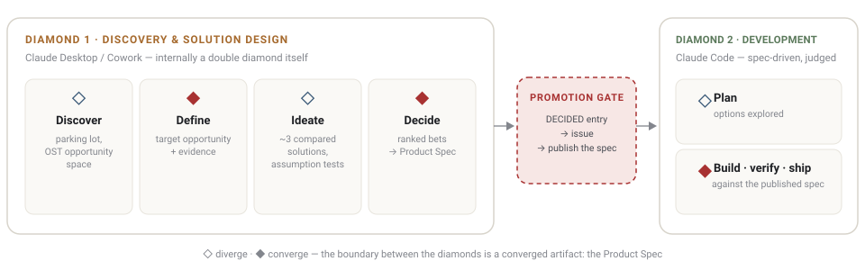
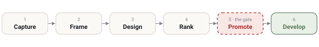
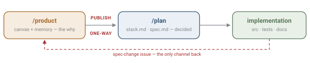

Claude Diamonds — learning
Claude, learned properly
Short lessons on how Claude Code actually works, sourced from Anthropic's own documentation. Plus the visual home of the two-diamond product method.
The product method

Two diamonds, one gate
The Claude Diamonds method end to end: both diamonds diverge and converge, the Product Spec at the boundary, the repo contract.
Built
How to run it
Six steps from raw idea to shipped code — capture → frame → design → rank → promote → develop. Step five is the gate, and it is human and manual.
Built
The repo contract
/product keeps the why, /plan holds what is decided — published one-way at the gate, never hand-edited. A spec-change issue is the only way back.
Doc ↗Decision Stack — Eriksson
The vertical why: Vision → Strategy → Objectives → Opportunities → Principles, and the how/why test that finds the missing work.
Doc ↗Opportunity Solution Tree — Torres
Outcome → evidenced opportunities → ~3 compared solutions → assumption tests. Evidence, never invention.
BuiltPrioritization — Cutler
Force-ranked 1-N bets and the full machine: entry sort → pairwise argument → ten named traps — with a workshop agenda and self-test.
Claude fundamentals
Turns, the agentic loop, and loop patterns
What a turn is, what the agentic loop does, and how /goal, /loop, and /schedule differ — with the mechanics behind each.
Context and compaction
What fills the context window, what gets summarized when it's full, and how to steer what survives.
BuiltHooks
Where hooks fire inside the loop, what they can see, and what they can block.
BuiltSubagents
How a subagent's context differs from its parent's, and when delegating actually saves tokens.
Looking for the product method instead — the two-diamond process for running decisions with Claude end to end? See the Method page or read the README.